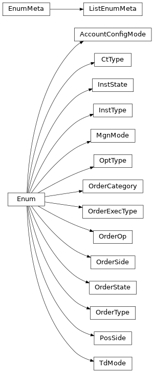

pyokx.okx_market_maker.utils.OkxEnum
- class pyokx.okx_market_maker.utils.OkxEnum.AccountConfigMode(value)[source]
Bases:
EnumAn enumeration.
- CASH = 1
- MULTI_CCY_MARGIN = 3
- PORTFOLIO_MARGIN = 4
- SINGLE_CCY_MARGIN = 2
- class pyokx.okx_market_maker.utils.OkxEnum.CtType(value)[source]
Bases:
EnumAn enumeration.
- INVERSE = 'inverse'
- LINEAR = 'linear'
- class pyokx.okx_market_maker.utils.OkxEnum.InstState(value)[source]
Bases:
EnumAn enumeration.
- LIVE = 'live'
- PREOPEN = 'preopen'
- SUSPEND = 'suspend'
- TEST = 'test'
- class pyokx.okx_market_maker.utils.OkxEnum.InstType(value)[source]
Bases:
EnumAn enumeration.
- FUTURES = 'FUTURES'
- MARGIN = 'MARGIN'
- OPTION = 'OPTION'
- SPOT = 'SPOT'
- SWAP = 'SWAP'
- class pyokx.okx_market_maker.utils.OkxEnum.ListEnumMeta(cls, bases, classdict, **kwds)[source]
Bases:
EnumMeta
- class pyokx.okx_market_maker.utils.OkxEnum.MgnMode(value)[source]
Bases:
EnumAn enumeration.
- cross = 'cross'
- isolated = 'isolated'
- class pyokx.okx_market_maker.utils.OkxEnum.OptType(value)[source]
Bases:
EnumAn enumeration.
- CALL = 'C'
- PUT = 'P'
- class pyokx.okx_market_maker.utils.OkxEnum.OrderCategory(value)[source]
Bases:
EnumAn enumeration.
- adl = 'adl'
- ddh = 'ddh'
- delivery = 'delivery'
- full_liquidation = 'full_liquidation'
- normal = 'normal'
- partial_liquidation = 'partial_liquidation'
- twap = 'twap'
- class pyokx.okx_market_maker.utils.OkxEnum.OrderExecType(value)[source]
Bases:
EnumAn enumeration.
- MAKER = 'M'
- TAKER = 'T'
- class pyokx.okx_market_maker.utils.OkxEnum.OrderOp(value)[source]
Bases:
EnumAn enumeration.
- AMEND = 'amend-order'
- BATCH_AMEND = 'batch-amend-order'
- BATCH_CANCEL = 'batch-cancel-orders'
- BATCH_ORDER = 'batch-orders'
- CANCEL = 'cancel-order'
- ORDER = 'order'
- class pyokx.okx_market_maker.utils.OkxEnum.OrderSide(value)[source]
Bases:
EnumAn enumeration.
- BUY = 'buy'
- SELL = 'sell'
- class pyokx.okx_market_maker.utils.OkxEnum.OrderState(value)[source]
Bases:
EnumAn enumeration.
- CANCELED = 'canceled'
- FILLED = 'filled'
- LIVE = 'live'
- PARTIALLY_FILLED = 'partially_filled'
- class pyokx.okx_market_maker.utils.OkxEnum.OrderType(value)[source]
Bases:
EnumAn enumeration.
- FOK = 'fok'
- IOC = 'ioc'
- LIMIT = 'limit'
- MARKET = 'market'
- OPTIMAL_LIMIT_IOC = 'optimal_limit_ioc'
- POST_ONLY = 'post_only'
- class pyokx.okx_market_maker.utils.OkxEnum.PosSide(value)[source]
Bases:
EnumAn enumeration.
- long = 'long'
- net = 'net'
- short = 'short'
- class pyokx.okx_market_maker.utils.OkxEnum.TdMode(value)[source]
Bases:
EnumAn enumeration.
- CASH = 'cash'
- CROSS = 'cross'
- ISOLATED = 'isolated'
